为了拟合逻辑回归模型的参数，我们将尝试找到能最小化代价函数关于 w 和 b 的值的参数 w。00:02
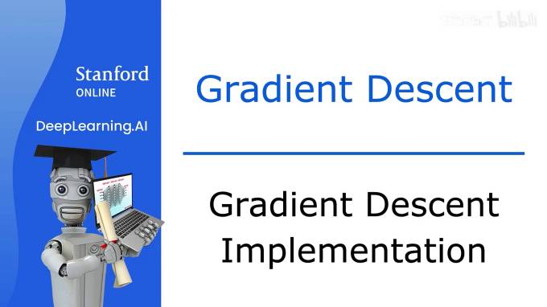

我们仍会应用梯度下降来实现这一点。00:13
在本视频中，我们将聚焦于如何为参数 w 和 b 找到好的选择。00:20
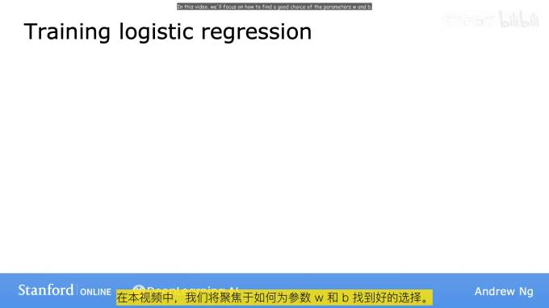
如果你给模型一个新的输入 x，比如医院里来了一位新病患，他有特定的肿瘤大小和年龄，需要做出诊断，那么模型就可以做出预测，或者说它可以尝试估计标签为一的概率。00:28

你可以用来最小化代价函数的算法就是梯度下降。00:48
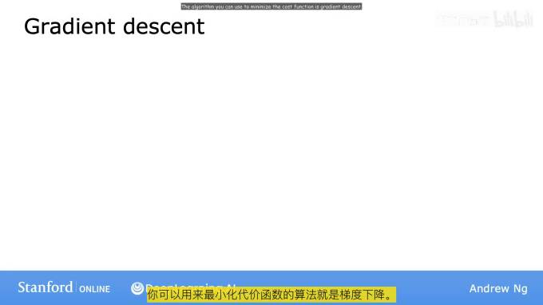

所以如果你想最小化关于 w 和 b 的代价函数 J，那么，这就是常规的梯度下降算法，你重复更新每个参数，用 l 旧值减去 alpha，也就是学习率，乘以这个导数项。00:56

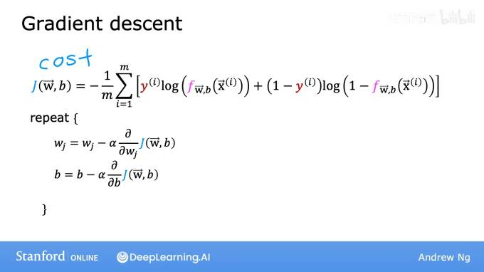
我们来看一下关于 wj 的导数，也就是上面这一项，照常，j 的取值范围是从一到 n，其中 n 是特征的数量。01:17


如果有人应用微积分法则，你可以证明代价函数大写关于 wj 的导数等于这里的这个表达式。01:30
它是 m 分之一乘以从一到 m 求和的这个误差项，即 f 减去标签 y 再乘以 xj。01:43
这里，这个 xij 是第 i 个训练样本的第 j 个特征。01:59
现在，我们也来看一下 J 关于参数 b 的导数。02:07
结果就是这里的这个表达式，它和上面的表达式非常相似，除了末尾没有乘以这个带有上标 i 下标 j 的 x。02:12

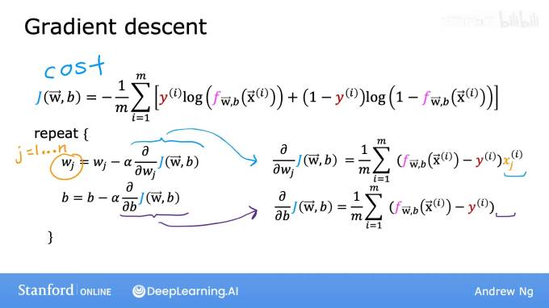
提醒一下，与你在线性回归中看到的类似，执行这些更新的方式是要使用同步更新，意味着你会先为所有这些更新计算右侧的值。02:26

然后同时覆写左侧所有的值。02:39

那么，让我把这些导数表达式拿过来，代入到这些项中。02:46
这就给出了逻辑回归的梯度下降。02:54
现在，你可能会好奇一件有趣的事，这两个方程看起来和我们之前为线性回归想出的算法一模一样。03:00
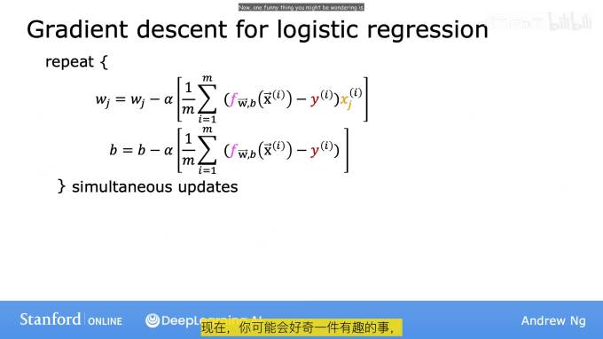
所以你可能会想，线性回归是不是实际上就等同于逻辑回归？03:13
嗯，尽管这些方程看起来一样，但这不是线性回归的原因在于，函数 f 的定义已经变了。03:19
在线性回归中，x 的 f 是这样的，是 wx 加 b，但在逻辑回归中，f 被定义为应用于 wx 加 b 的函数。03:31


所以尽管写出来的算法在线性回归和逻辑回归中看起来相同，但实际上它们是两个非常不同的算法，因为关于 x 的 f 的定义不同。03:44
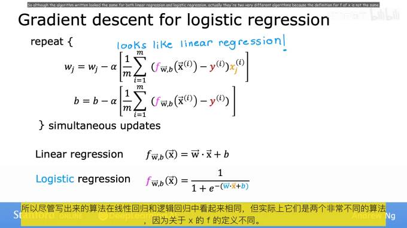
当我们之前讨论线性回归的梯度下降时，你看到了如何监控梯度下降以确保它收敛。03:58

你可以对逻辑回归应用同样的方法来确保它也能收敛。04:07
我写出这些更新式时，像是你每次更新参数 wj 中的一个参数。04:14
与讨论线性回归的向量化实现类似，你也可以使用向量化来让逻辑回归的梯度下降运行得更快。04:24
我不会在这个视频中深入探讨向量化实现的细节，但你也可以在选修实验中了解更多并看到相关代码。04:37

那么现在，你知道了如何为逻辑回归实现梯度下降。04:48
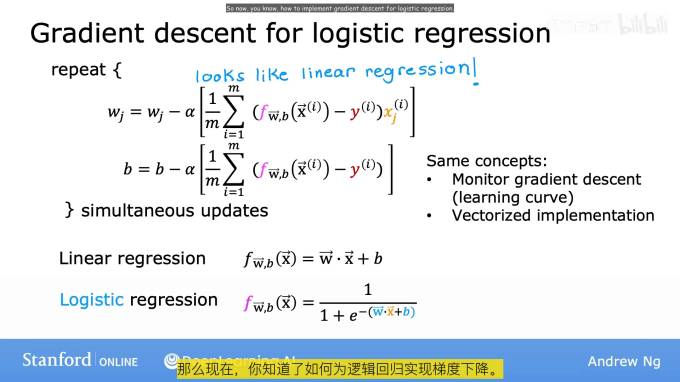
你可能还记得我们在使用线性回归时的特征缩放，你看到了特征缩放，也就是将所有特征缩放到相似的值范围，比如负一到正一之间，这如何能帮助梯度下降更快地收敛。04:54

以同样的方式应用特征缩放，将不同特征缩放到相似的值范围，也可以加速逻辑回归的梯度下降。05:12

在接下来的选修实验中，你也会看到逻辑回归的梯度是如何在代码中计算的。05:22

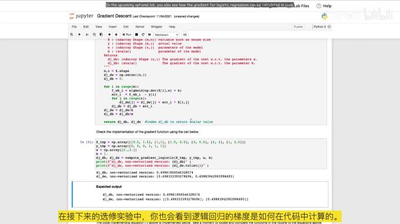
这会很有用，因为你将在本周结束时的练习实验中实现它。05:31

在你于该实验中运行梯度下降之后，会有一系列漂亮的动画图表展示梯度下降的实际运作过程。05:38

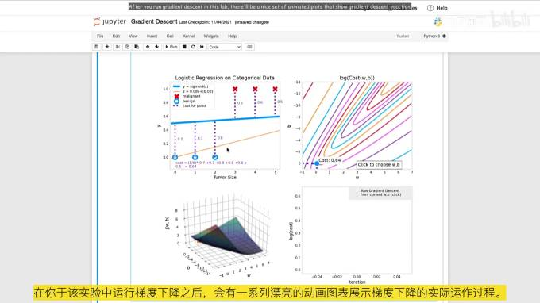
你会看到 sigmoid 函数、代价的等高线图、代价的三维曲面图以及学习曲线，都随着梯度下降的运行。05:48
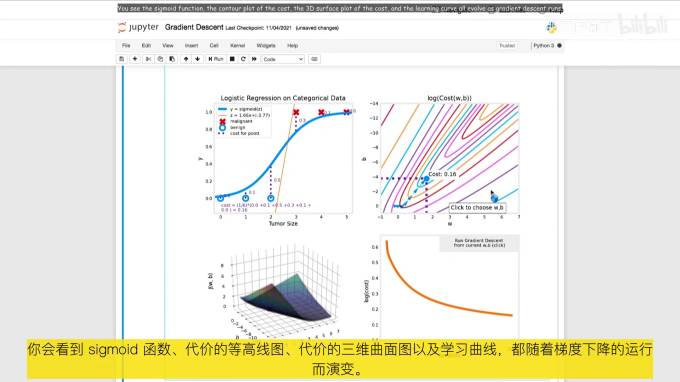
在那之后还有另一个选修实验，它简短而精悍，但也非常有用，因为它会向你展示如何使用流行的，车，来训练用于分类的逻辑回归模型。06:00
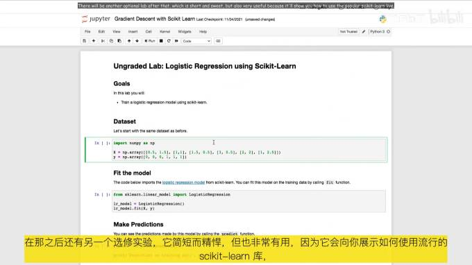


当今许多公司的机器学习从业者都在日常工作中经常使用 scikit-learn。06:14
所以我希望你也能看看 scikit-learn 的这个函数，并了解它的使用方法。06:21
你现在知道如何实现逻辑回归了。06:30
这是一个非常强大、应用非常广泛的学习算法，你现在知道如何让它为你工作了。06:34